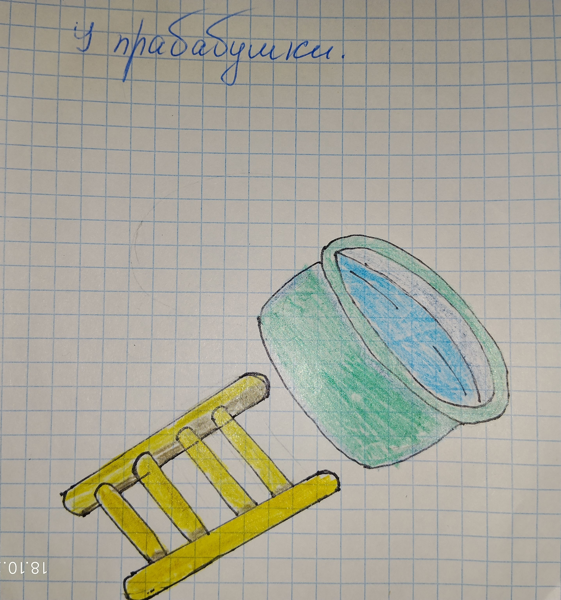

(Рисунок: Опрокинутый тазик и лестница)

А ещё мы ездили в гости к прабабушке. Она всегда готовила пироги, пирожки и всякие вкусняшки. И всегда, когда готовила, ставила рядом тазик с содой для мытья рук — чтобы не бегать к умывальнику.
Мне было лет четыре. Я полезла на печку — хотела посмотреть, что там наверху. Забралась на лестницу, но сорвалась и полетела вниз. И опрокинула тазик с водой. А прабабушка только недавно вымыла полы!
Вода разлилась по всей кухне. Я испугалась, прабабушка всплеснула руками, все прибежали — шум, гам! А я сижу на полу, мокрая, и не знаю, плакать или смеяться.
Ещё был случай. Мама ушла в баню мыть старшую сестру. Меня отправили попозже. Я пошла, а у бани жила собака — как её звали, не помню. Она увидела меня и начала прыгать и скакать от радости. Я подошла ближе, а она меня уронила и стала лизать лицо. Я испугалась и закричала. Мама выбежала из бани — думала, что случилось. А это просто собака слишком обрадовалась!
А ещё был самый смешной случай. Меня положили спать на кровать у входной двери. Над дверью была полка, а на полке стоял самогон. Прадедушка решил выпить, пока никто не видит. Он встал на кровать — и полетел на меня!
Но произошло чудо: кровать отпружинила его, и он улетел на пол. А я лежала и думала: «Всё, прощай, жизнь!» 🤣